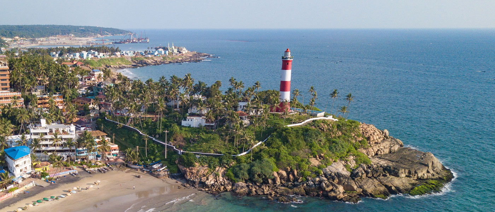

Kovalam Beach
Epicentre of tourist flow, Kovalam Beach needs no introduction. This water delight seizes the top position in the list of tourist places in Trivandrum. Often crowded with both local and foreign tourists, it is located 13km away from the city.
Kovalam Beach is the treasure chest of multitude of adventure activities. Along with the sessions of para-sailing, diving and wind surfing, the beach also allows you to go on a leisure walk and offers a playful swimming time. Tourists have a choice to opt for lounge chairs to just sit and gaze at the most extraordinary sunrises and sunsets. The gleaming blue water and silver sands offers a quality time to enjoy nature at its best.
There are many beach resorts that offer customized services. From lip-smacking dishes to allocation of rooms, these retreats have impeccable services which one can easily avail. The well-trained staff offers comfortable and convenient environment. Assisting in planning a day on the beach, the stays take special care of the guests. It would be ideal to book in advance in order to avoid inconvenience.
Ayurvedic therapies are on the top rank when it comes to things to do in Trivandrum. Enjoy outstanding facilities such as Ayurvedic massages and therapies in God’s Own Country. Kovalam beach proves to be an ideal place to experience the benefits of age old Ayurveda.
Along with sightseeing and mouth-watering cuisines, enjoy a session of rejuvenating Ayurveda massage on the Kovalam Beach. The best time to visit here is during the month of September and March. However, visit in monsoon season allows the best experience of ayurvedic therapies and treatments

Napier Museum
Named after Lord Napier, this art and history museum was established in 1855. An exemplary example of gothic architecture-style, Napier Museum boasts greatly of its natural air conditioning system. It houses an exceptional collection of ornaments, bronze idols, chariots, and ivory carvings. The museum offers insight into the rich and glorious culture and history of Kerala.
The great contribution made by Rajput, Mughal, and Tanjore schools of art along with the skillful work by several Chinese, Japanese, and Tibetan artists can be found in here. The Japanese leather figures depicting the epics of Mahabharata and Ramayana catch the eyes of tourists.
Napier Museum is certainly one of the most visited tourist places in Trivandrum. Situated in the Museum compound, the ground floor of this place houses India’s oldest zoological garden. Another important feature is Sree Chithra Art Gallery, established by Maharaja Chithira Thirunalin in 1935. The gallery contains epic works from much famed Raja Ravi Varma and Nicholas Roerich.
Amid a well-laid-out garden, the zoological park houses a lake and boat club. The park offers an excellent day outing for children and adults alike. It boasts of 75 different species of animals and birds from India, Ethiopia, and Australia. It is also home to the Lion-tailed Macaque, Nilgiri Tahr, Manipur deer, Indian Rhino, Nilgiri Langur, Asiatic Lion and the Royal Bengal Tiger. There is prominent fauna found here along with habitats of giraffe, hippopotamus, zebra, and Cape buffalo.

Padmanabhaswamy Temple
Dedicated to Lord Vishnu, Sree Padmanabhaswamy Temple is one of the famous places to visit. This holy shrine is one of the 108 abodes of Lord Vishnu. A large number of devotees throng the temple on multiple occasions.
The place of worship has lent its names to the capital city as ‘Thiru’ ‘Anantha’ ‘Puram’, which means Sacred Abode of Lord Anantha Padmanabha. Dravidian style of architecture is prominent in this holy structure.
The chief attraction is the deity of Padmanabhaswamy, enshrined in a reclining posture. However, the main deity remains that of Lord Vishnu and his heavenly consorts namely, Sridevi and Bhudevi. The sacred idol is covered with a special ayurveda mixture that helps in keeping the plaster intact and clean. Devotees donate a large sum of money and precious articles in this temple. The assets are believed to be value around 90,000 crores. The invaluable donations are kept safe in 6 different cellars.
Padmanabhaswamy Temple should definitely be included in the itinerary of the places to visit in Trivandrum. Indeed, the temple remains impeccable in appearance and religious sentiments attached to it.

Neyyar Dam and Wildlife Sanctuary
There are indeed number of things to do in Trivandrum, including paying a visit to picturesque Neyyar Dam and its neighbouring wildlife sanctuary. Built in 1958, the dam is an ideal family picnic spot which is set against the mesmerizing landscape. It is built where rivers like Neyyar, Kallar and Mullayar confluence. The area is famed for obtaining several medicinal herbs as well.
In the vicinity of this place, a wildlife sanctuary is well laid out. There are deer safari parks, crocodile and lion farms along with watchtower in the region. A guided trek, safari and elephant ride is a must here. Take out at least a day in order to get the best experience of the wild life sanctuary.

Ponmudi Hill Station
The captivating hill station of Ponmudi is at a distance of 61 kms from Trivandrum. It is situated 915 meters above sea level and offers respite from the heat and hustle and bustle of other cities. Its narrow, meandering pathways, dark woods and soothing climate make it a splendid location to spend a holiday at. A multitude of colourful butterflies, springs and rapids, myriad species wild flowers and the deer park nearby are the key attraction of this fascinating hill station.